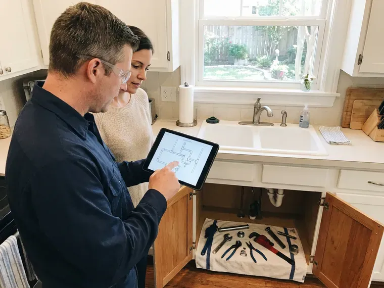

Gas Leak Repair in Rochester, NH
Gas leak repair in Rochester, NH with a combustible gas detector and a test gauge, so we fix the right joint the first time.
- Natural Gas and Propane
- Same-Day Gas Leak Response
- Licensed Gas Plumbers
- Upfront Pricing

Get Your Gas Turned Back On in Rochester, NH.
Licensed gas plumbers in Rochester, available after hours for leaks.
Gas Leak Repair in Rochester, NH
FVR Plumbing gets a lot of calls after the utility has locked a meter. Gas stays off until a licensed contractor makes the repair and passes a pressure test, which is where we come in. We schedule those fast, because nobody wants a house without hot water for long. We test the pool heater line while we are there.
Our expertise includes:
- Appliance connector and shutoff valve replacement
- Gauge leak testing of every gas branch
- Sediment trap installation where code requires

Additional Plumbing Repair Services in Rochester, NH
We offer expert plumbing repair services across Rochester, NH to fix leaks, restore flow, and keep your system running smoothly.



Customers
Why Choose FVR Plumbing for Gas Leak Repair in Rochester, NH?
The leak you smelled is only the start. We check connectors and valves on every gas appliance in the house. You get a written, priced list of anything close to failing, and the timing is your call.
- Code Compliant, Repairs follow the local fuel gas code in Rochester, NH, with permits when required.
- Permits Handled, We pull the permit and book the inspection so you do not have to.
- Licensed for Gas, Techs on gas calls hold the gas license the work requires.
Citywide Coverage
Propane homes past the Rochester limits get the same response as houses on the utility main. Our test covers the house side, from the second regulator to every appliance. Long driveways are no problem. If the leak is on the tank side, we call your supplier and stay until they arrive or the system is safe.
Experienced Team
Our gas plumbers carry a fuel gas license on top of their plumbing license where one is required, and most have ten years or more on gas calls. Before and after readings are a habit, even on a five-minute connector swap. Slow leaks are their specialty. Years of slow leaks taught them where to look first, starting with crawlspace unions.
Safety-First Approach
Utility red tags are respected. We do not remove a lock or a tag the utility placed. Once the repair passes, the utility removes the lock, and some utilities let a licensed plumber handle the relight.
Trusted Certified Rochester Plumbing Services Professionals
At FVR Plumbing, we take pride in licensed, certified plumbing services throughout Rochester, NH. Credentials matter in this trade. Every repair, install and maintenance visit follows strict safety and quality rules, and the plumbers doing the work carry recognized industry credentials.
Call Us Now PHCC Plumbing Contractor Recognition
PHCC Plumbing Contractor Recognition Better Business Bureau (BBB) Accreditation
Better Business Bureau (BBB) Accreditation Angi Certified Pro
Angi Certified Pro ISO 9001 Quality Management Certification
ISO 9001 Quality Management CertificationInsured Gas Leak Repair in Rochester, NH
Residential Gas Leak Detection in Rochester
A gas leak in a house rarely sits where the smell is strongest, because gas drifts along joists and collects in closets and basements. The first step is a pressure gauge on the piping, which tells us whether the system is actually losing gas. Then the sniffer comes out. Our combustible gas detector reads in parts per million, so we can follow the reading fitting by fitting until it peaks. Bubble solution on the suspect joint gives the final answer.

Emergency Gas Leak Services in Rochester
That sulfur smell is mercaptan, an odorant the supplier adds because natural gas and propane have almost no smell on their own. A strong smell means walk out and leave the door open. Do not flip switches. Once the utility has made the meter safe, we come out and make the repair. We bring fittings, pipe and connectors on the truck, so most leaks are fixed on the first visit.
Appliance Connector Replacement in Rochester
Old uncoated brass connectors, the kind made before the mid-1970s, are the subject of consumer safety warnings because the flare nut can separate from the tube. If your range or water heater still has one, it should come out. We see them weekly. The replacement is a coated stainless connector sized for the appliance, with a new ball valve and a sediment trap where one is required. Bubble testing follows before the burner is lit.
Propane Gas Leak Repair in Rochester, NH
Propane behaves differently from natural gas because it is heavier than air, so a leak settles into basements and crawlspaces instead of rising. We check both regulators, the one at the tank and the one at the house. Low spots get sniffed first. Your propane supplier owns the tank in most cases, so we coordinate with them for anything on the tank side of the first regulator. Rural properties with buried tanks get a line test too.
Underground Gas Line Repair in Rochester
Yard lines run from the meter to the house, and often on to a detached garage, a pool heater, a grill or an outdoor kitchen. Steel pipe in the ground corrodes wherever the wrap was nicked during the original install. Roots and settling do damage too. After an 811 locate, we excavate, cut out the failed run and lay polyethylene with a tracer wire beside it. Sand goes around the new pipe before backfill, per Rochester trench requirements.
Gas Line Repair and Replacement in Rochester, NH
Black iron pipe with threaded fittings is still the most common interior gas pipe, and the leak is nearly always at a thread, not in the middle of a length. We take the joint apart, clean the threads and remake it with fresh gas-rated sealant. Cracked fittings get replaced. Where a length has rusted badly, usually near a damp crawlspace vent, we cut back to sound pipe and splice in new. Every remade joint gets a detector check and a gauge test.
Interior Gas Pipe Repair in Rochester, NH
Inside the house, gas leaks hide at unions in the basement and at the threaded nipple behind the furnace, places nobody looks. We work from the meter inward, testing each section as we go. Drywall stays intact when possible. If the leak is inside a finished wall, running a new CSST line around it often costs less than opening and patching the wall. Nothing is turned back on until the gauge holds steady.

Gas Line Replacement and Upgrades in Rochester, NH
Adding a gas range or a tankless heater can overload pipe that was sized years ago for just a furnace and a water heater. Sizing starts with the total BTU load and the longest run from the meter. Undersized pipe starves burners. Where the old pipe is rusty or poorly threaded, we replace it with black iron or CSST, whichever reaches easier. A big tankless unit may also need a larger meter from the utility.
Nearby Gas Leak Repair in Rochester, NH
Response time is only half of it. You also want a licensed plumber who tests every branch before leaving, not just the joint you smelled. Our Rochester, NH crew carries a manometer and a combustible gas detector on every call. Most leaks are found and fixed in the same visit.
Outdoor gas lines produce a surprising share of our calls, because pool heaters and fire pits sit at the end of long buried runs. Fence augers and sprinkler trenching cut more of these lines than rust does. Look for dead grass. That branch gets valved off and tested on its own.
FVR Plumbing at a Glance
- Fully licensed plumbing team covering Rochester, NH
- 24/7 emergency service with same-day scheduling
- Clear written estimates, no hidden fees
- 4.9-star rated by 840+ New Hampshire customers
Rochester Map
Rochester Information
- Population
- 33,519
- Area codes
- Local
- Service area
- Rochester and towns within a 40 mile drive
- Nearby
- Somersworth, Dover, Durham, Portsmouth
Pool heaters, fire pits and outdoor kitchens often sit at the end of long buried gas runs that nobody has checked since they went in, which makes them a frequent leak point in Rochester, NH.
Expert Services
Call FVR Plumbing for reliable plumbing work done by licensed pros in Rochester, NH.
Our Specialized Plumbing Services in Rochester, NH
At FVR Plumbing, we handle the full list of plumbing services across Rochester, NH. From leak detection to full system installs, our team works fast and charges fair prices on homes and commercial properties alike. Explore our core services below:


How a Gas Leak Repair Works in Rochester, NH
From your call to the final gauge reading, this is what to expect.
Call Us
Once you are outside and the utility has been called, phone (844) 442-1569. We ask where the smell is and whether the meter was shut or tagged.
Make It Safe
The tech confirms the gas is off, ventilates the area and clears ignition sources before any tools come out.
Find the Leak
A gauge confirms the system is losing pressure, then a sniffer and bubble solution narrow it to one joint.
Frequently Asked Questions About Gas Leak Repair in Rochester
Most gas leak repairs in Rochester, NH land between $150 and $2,000, and the spread comes from where the leak is and how hard it is to reach. A loose fitting at an exposed appliance is at the bottom of that range. Excavation costs more. Buried pipe or a repair inside finished walls pushes the price toward the top, sometimes past $2,000. You get a written number once the leak is found.
For CSST we use TracPipe and Gastite, matched to whatever is already in the house, since the brands do not share fittings. Valves and fittings come from established manufacturers and carry gas ratings.
Leave, then call the utility or 911 from outside. After the utility shuts the gas, call us for the fix.
There is usually no required schedule for homeowner gas piping, but a leak test every few years makes sense on older homes or long yard lines. A jump in the bill or a lazy yellow flame is a reason to call sooner.
Black iron, galvanized steel in older homes, copper where local code allowed it, CSST and polyethylene for buried runs. Appliance connectors are part of the work too.
Rotten eggs is the classic one, because suppliers add mercaptan so you can smell what would otherwise be nearly odorless natural gas. You might also hear a hiss near the meter or an appliance. Dead grass over a buried line counts too. Feeling dizzy indoors and better outside is a warning as well.
Dispatch sends the closest gas-qualified tech as soon as the utility confirms the area is safe, and in most of Rochester that means a few hours or less. Exact arrival depends on traffic and how busy the day is. We give you a window on the phone and call when the tech is twenty minutes out.
Plan on one to two hours for most fitting and connector repairs. Underground work runs most of a day, counting the dig and the test.
What People Are Saying About Our Plumbing Experts?

Tyler J.
We bought a taller comfort height toilet for my dad, who just had knee surgery. The plumber pulled the old one, found the flange was cracked, and replaced it before setting the new bowl. Took about two hours.
Toilet Installation · Portsmouth, NHCarlos V.
Our house still had galvanized pipe, and upstairs the shower was a trickle. The crew repiped everything in PEX over three days and patched every drywall hole before they left. The pressure difference is night and day.
Repiping · Rochester, NH
Paul B.
Our pit pump ran nonstop even in dry weather. The plumber found the check valve was stuck open, so the same water kept cycling back into the pit. New valve, new float switch, done in an hour. It runs quiet now.
Sump Pump · Concord, NH
Megan L.
Our upstairs tub drained so slowly that every shower turned into a bath. FVR Plumbing pulled a wad of hair out of the stopper and then snaked the line past the trap. Three months later it still drains fast.
Drain Cleaning · Concord, NH
Robert G.
The camera showed a full break in our clay sewer line near the street. FVR Plumbing replaced it with a trenchless pipe burst, so the only digging was two small pits in the yard. They let us watch the footage before and after.
Sewer Line Replacement · Dover, NH
Patricia H.
We had a slab leak that two other companies could not find. FVR Plumbing located it in under an hour with a listening device. They rerouted the line through the attic instead of breaking up the floor, so we kept our kitchen tile.
Slab Leak Repair · Somersworth, NH